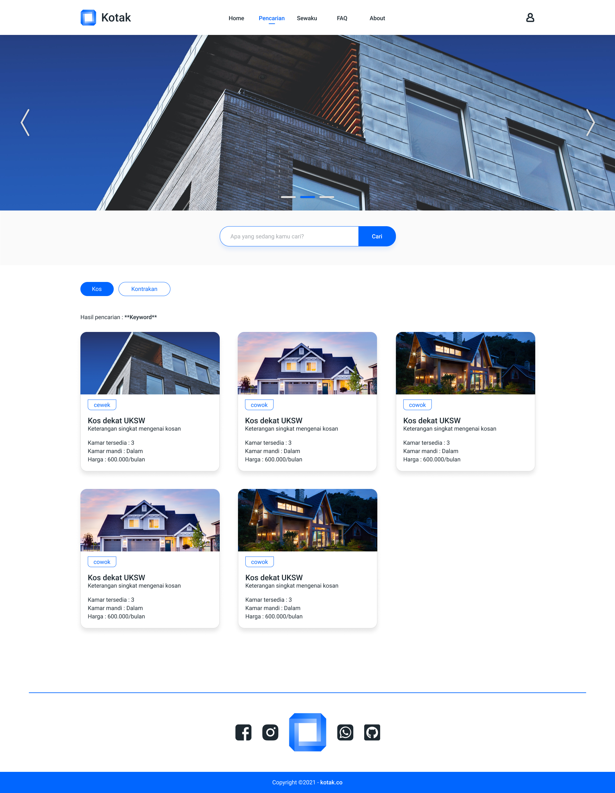

Pengembangan Website Kotak
Halaman artikel ini kami buat untuk memudahkan proses komunikasi antara developer dan pengguna. Disini akan selalu kami update mengenai hal-hal yang perlu diketahui oleh pengguna.
Konsep dan Ide
Konsep : Penyewaan kos dan kontrakan kota Salatiga
Perangkat Lunak : Kotak (Kos dan Kontrak)
Penjelasan : Perangkat lunak yang kami rancang adalah penyewaan kos dan kontrakan khusus di kota Salatiga. Kami memilih konsep ini dengan alasan untuk memudahkan pencarian kos dan kontrakan bagi para perantau yang akan menempuh studi atau bekerja dari berbagai kota di luar kota Salatiga. Dalam perangkat lunak ini terdapat 3 aktor yaitu admin, pemilik properti, dan penyewa. Admin memiliki akses untuk mengelola seluruh bagian perangkat lunak, sedangkan pemilik properti dan penyewa memiliki akses yang terbatas pada perangkat lunak ini.
Design Thinking
Pada bagian ini kami melakukan beberapa tahapan yang dilakukan yaitu sebagai berikut
1. Emphatize
Permasalahan yang dihadapi oleh pengguna adalah sebagai berikut.
- Sulitnya mencari informasi kos atau kontrakan di kota Salatiga
- Kesulitan mendapatkan informasi ketersediaan kamar
- Kesulitan mendapatkan informasi detail fasilitas (laundry dan rumah makan)
- Tingginya biaya administrasi di platform lain
Dari berbagai permasalahan tersebut, kami mengembangkan lagi menjadi Define yang akan dijelaskan pada poin berikutnya.
2. Define
Define digunakan untuk menentukan masalah inti yang akan diidentifikasi. Define akan sangat berguna untuk menyelesaikan masalah pengguna. Untuk memudahkan, kami membuat poin-poin berikut ini.
3. Ideate
Ideate digunakan untuk mencari ide yang bertujuan untuk menyelesaikan permasalahan. Ide yang kami dapatkan kami bagi menjadi beberapa kategori serta poin-poin berikut.
4. Prototype
Tahap prototyping diawali dengan membuat flowchart sebagai berikut.
Dalam pengembangan perangkat lunak ini, beberapa desain halaman yang kami buat adalah sebagai berikut.
- Halaman Pencarian 
Untuk memaksimalkan pengalaman pengguna, disini kami melakukan pemilihan warna dasar putih dengan warna lain sebagai berikut.
5. Test
Perangkat lunak masih dalam tahap pengembangan. Maka dari itu tahap testing dilakukan setelah pengembangan perangkat lunak.